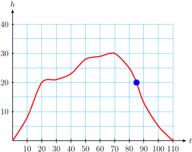
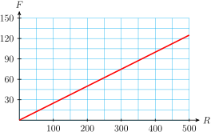
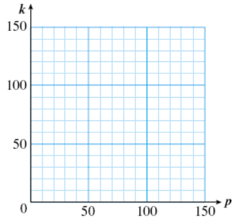
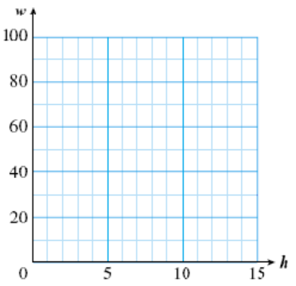
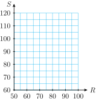
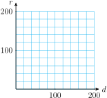
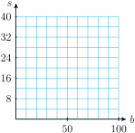
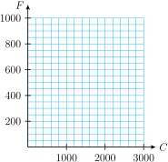
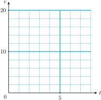
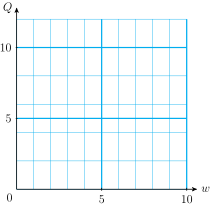

Section 1.1 Variables
Subsection What is a Variable?
Variable.
A variable is a numerical quantity that changes over time or in different situations.
We can show the values of a variable in a table or a graph.
Example 1.1.
Life expectancy is the average age to which people will live. The table below shows that your life expectancy depends on the year of your birth. Thus, life expectancy is a variable.
| Year Born | Life Expectancy |
| \(1900\) | \(49\) |
| \(1910\) | \(51\) |
| \(1920\) | \(58\) |
| \(1930\) | \(59\) |
| \(1940\) | \(63\) |
| \(1950\) | \(68\) |
| \(1960\) | \(70\) |
| \(1970\) | \(71\) |
| \(1980\) | \(74\) |
| \(1990\) | \(75\) |
To what age could people born in 1940 expect to live?
In what year did people's life expectancy reach 70 years of age?
People born in 1940 lived to 63 years of age on average.
Life expectancy reached 70 years of age in 1960.
Example 1.2.
The graph below shows the average annual salaries of NFL football players, starting in 1940. The average salary of NFL football players is a variable.
Use the graph to estimate the average annual salary of NFL football players in 1975.
By how much did salaries increase from 1975 to 1980?
In 1975, the average NFL player's salary was $40,000.
-
In 1980, the average salary was $80,000, so salaries had increased from $40,000 to $80,000, or by
\begin{equation*} $80,000 - $40,000 = $40,000 \end{equation*}
Reading Questions Reading Questions
1.
A numerical quantity that changes over time or in different situations is called a .
variable
2.
We can show the values of a variable in a or a .
table, graph
Look Closer.
By displaying the values of a variable in a table or a graph, we sometimes see trends or patterns in those values. For example, we see that life expectancy has been increasing slowly over time, and that salaries of NFL football players have been increasing ever more rapidly since 1940.
Subsection Using Letters to Represent Variables
Imagine that you are traveling by airplane to another city. The table below shows the altitude of the airplane, in thousands of feet, at ten-minute intervals after take-off. The two quantities shown in the table, time and altitude, are both variables.
| Time (min) | \(0\) | \(10\) | \(20\) | \(30\) | \(40\) | \(50\) | \(60\) | \(70\) | \(80\) | \(90\) | \(100\) | \(110\) |
| Altitude (1000 ft) | \(0\) | \(8\) | \(20\) | \(21\) | \(23\) | \(28\) | \(29\) | \(30\) | \(25\) | \(13\) | \(5\) | \(0\) |
We often use a letter as a kind of short-hand to represent a variable. For this example, we use the following letters:
We can get a better feel for the variables by plotting them on a graph. In the figure below, the values of \(t\) are displayed on the horizontal scale, or axis, and the values of \(h\) are shown on the vertical axis. The graph shows how the values of \(h\) are related to the values of \(t\text{.}\)

Example 1.3.
What is the value of \(h\) when \(t=85\text{?}\) What do these values mean in this situation?
When is the plane descending?
-
The graph shows that \(h\) is approximately 20 when \(t=85\text{.}\) This means that at 85 minutes into the flight, the plane's altitude is about 20,000 feet.
 The plane is descending when its altitude is decreasing. On the graph, \(h\) begins to decrease at \(t=70\) and continues decreasing until \(t=110\text{.}\) Thus, the plane is descending from the 70th minute until the end of the flight at 110 minutes.
Reading Questions Reading Questions
3.
We often use as a shorthand to represent variable quantities.
letters
4.
Which variable is displayed on the vertical axis in Example 1.3?
altitude
Look Ahead.
It would be useful if we could discover a formula or rule to help us predict the values of an interesting variable.
Subsection Connections Between Variables
Sometimes there is a simple mathematical relationship between the values of two variables.
Example 1.4.
Fernando plans to share an apartment with three other students next year. The table shows his share of the rent for apartments of various prices.
| Rent | \(280\) | \(300\) | \(340\) | \(360\) | \(400\) | \(460\) | \(500\) |
| Fernando's share | \(70\) | \(75\) | \(85\) | \(90\) | \(100\) | \(\blert{?}\) | \(\blert{?}\) |
Fill in the blanks in the table. Describe in words how you found the unknown values.
\begin{equation*} \blert{\text{Divide the rent by 4}} \end{equation*}Write a mathematical sentence that gives Fernando's share of the total rent.
\begin{equation*} \blert{\text{Fernando's share}=\text{Rent}\div 4} \end{equation*}The total rent and Fernando's share are variables. Let \(R\) stand for the total rent, and let \(F\) stand for Fernando's share. Using these letters, write a formula for Fernando's share of the rent.
\begin{equation*} \blert{F=R \div 4} \end{equation*}-
Plot the points from the table and connect them with a smooth curve. Extend your line so that it reaches across the entire grid, not just the points that you plotted.

A formula relating two variables is a type of equation, and an equation is just a statement that two quantities are equal.
By studying the values in a table, we may be able to find a relationship between the values, and then write an equation relating the two variables.
Example 1.5.
Write an equation that relates the two variables in the table.
| \(x\) | \(5\) | \(10\) | \(15\) | \(20\) | \(25\) |
| \(y\) | \(2\) | \(7\) | \(12\) | \(17\) | \(22\) |
The two variables are \(x\) and \(y\text{.}\) Each column of the table shows a related pair of values. Notice that 2 is 3 less than 5, 7 is 3 less than 10, and so on. That is:
and so on. In each column, we can find \(y\) by subtracting 3 from \(x\text{.}\) Thus, \(y=x-3\text{.}\)
Reading Questions Reading Questions
5.
A statement that two quantities are equal is called an .
equation
This is the end of the Reading portion of Section 1.1. Now try the Skills Warm-Up before the next class meeting.
Subsection Skills Warm-Up
Exercises Exercises
Exercise Group.
Choose the correct arithmetic operation (addition, subtraction, multiplication, or division) and explain how to answer the question.
1.
An air conditioner keeps the inside temperature \(16\degree\) cooler than the outside temperature. If the outside temperature is \(90\degree\text{,}\) how can you find the inside temperature?
2.
Tom's recipe for punch calls for 3 times as much fruit juice as soda. If he has half a gallon of soda, how can he find the amount of fruit juice he needs?
3.
A clothesline should be 2 feet longer than the distance between the supporting poles so that it can be tied at each end. If the poles are 20 feet apart, how can you find the length of the clothesline?
4.
The weight of a bridge is supported equally by 8 pillars. If the bridge weighs one million tons, how can you find the weight each pillar must support?
5.
Katrin has 4 hours to complete both her math and geography homework. If her math assignment takes \(2\dfrac{1}{2}\) hours, how can she calculate how long she has for geography?
6.
The cost of leasing a compact car is 63% the cost of a luxury car. If the lease on the luxury car is $500 per month, how can you find the cost of leasing the compact car?
Subsubsection Answers to Skills Warm-Up
Subtract 16 from the outside temperature.
Multiply the amount of soda by 3.
Add 2 feet to the distance between the poles.
Divide the weight of the bridge by 8.
Subtract the time for math from 4 hours.
Multiply the cost of the luxury car by 0.63.
Subsection Lesson
Subsubsection Activity 1: Reading a Graph
The graph shows the U.S. unemployment rate as a precent of the labor force during the years surrounding the Great Depression.
What was the unemployment rate in 1930?
When did the unemployment rate first reach 15%?
When did the unemplyment rate reach its highest value? What was the unemployment rate at that time?
After 1930, when was the first time the unemployment rate fell below 10%?
During which year did the unemployment rate show the greatest increase? During which year did it show the greatest decrease?
- Complete the table:
Year Unemployment
RateLabor Force
(Millions)Number
Unemployed\(1929\) \(\hphantom{0000}\) \(48.0\) \(\hphantom{0000}\) \(1930\) \(\hphantom{0000}\) \(48.8\) \(\hphantom{0000}\) \(1931\) \(\hphantom{0000}\) \(49.6\) \(\hphantom{0000}\) \(1932\) \(\hphantom{0000}\) \(50.3\) \(\hphantom{0000}\) \(1933\) \(\hphantom{0000}\) \(51.1\) \(\hphantom{0000}\) \(1934\) \(\hphantom{0000}\) \(51.9\) \(\hphantom{0000}\) \(1935\) \(\hphantom{0000}\) \(52.6\) \(\hphantom{0000}\) \(1936\) \(\hphantom{0000}\) \(53.3\) \(\hphantom{0000}\) \(1937\) \(\hphantom{0000}\) \(54.1\) \(\hphantom{0000}\) \(1938\) \(\hphantom{0000}\) \(54.9\) \(\hphantom{0000}\) \(1939\) \(\hphantom{0000}\) \(55.6\) \(\hphantom{0000}\) \(1940\) \(\hphantom{0000}\) \(56.2\) \(\hphantom{0000}\) \(1941\) \(\hphantom{0000}\) \(57.5\) \(\hphantom{0000}\) \(1942\) \(\hphantom{0000}\) \(60.4\) \(\hphantom{0000}\) During which year did the number of unemployed workers increase the most?
Subsubsection Activity 2: Writing Mathematical Sentences
-
Barry lives with his aunt while he attends college. Every week he gives her $20 from his paycheck to help pay for groceries. Fill in the table:
Barry's paycheck \(45\) \(60\) \(75\) \(100\) \(125\) \(p\) Calculation \(\blert{45-20}\) \(\hphantom{0000}\) \(\hphantom{0000}\) \(\hphantom{0000}\) \(\hphantom{0000}\) \(\hphantom{0000}\) Amount he keeps \(\blert{25}\) \(\hphantom{0000}\) \(\hphantom{0000}\) \(\hphantom{0000}\) \(\hphantom{0000}\) \(\hphantom{0000}\) Explain in words how to find the amount Barry keeps from his paycheck.
-
Write your explanation as a mathematical sentence:
Amount he keeps \(~=\)
Let \(p\) stand for the amount of Barry's paycheck and \(k\) for the amount he keeps. Write an equation for \(k\) in terms of \(p\text{.}\)
-
Plot the points from the table and connect them with a smooth curve.

-
Liz makes $6 an hour as a tutor in the Math Lab. Her wages for the week depend on the number of hours she works. Fill in the table:
Hours worked \(3\) \(5\) \(6\) \(8\) \(15\) \(h\) Calculation \(\blert{6 \times 3}\) \(\hphantom{0000}\) \(\hphantom{0000}\) \(\hphantom{0000}\) \(\hphantom{0000}\) \(\hphantom{0000}\) Wages \(\blert{18}\) \(\hphantom{0000}\) \(\hphantom{0000}\) \(\hphantom{0000}\) \(\hphantom{0000}\) \(\hphantom{0000}\) Explain in words how to find the Liz's wages for the week.
-
Write your explanation as a mathematical sentence:
Wages \(~=\)
Let \(h\) stand for the number of hours Liz worked and \(w\) for her wages. Write an equation for \(w\) in terms of \(h\text{.}\)
-
Plot the points from the table and connect them with a smooth curve.

Subsubsection Wrap-Up
Objectives.
In this Lesson we practiced the following skills:
Reading values from a graph
Plotting points from a table of values
Describing a relationship between two variables
Writing an equation relating two variables
Questions.
In Activity 1e, how do we calculate the increase in unemployment rate?
In Activity 1f, were more people unemployed in 1931 or in 1940?
In Activity 2, is the first row of the table plotted on the horizontal axis or the vertical axis?
Subsection Homework Preview
Exercises Exercises
Exercise Group.
Write an equation for \(y\) in terms of \(x\text{.}\)
1.
| \(x\) | \(1\) | \(2\) | \(5\) | \(8\) |
| \(y\) | \(9\) | \(10\) | \(13\) | \(16\) |
2.
| \(x\) | \(6\) | \(12\) | \(24\) | \(30\) |
| \(y\) | \(1\) | \(2\) | \(4\) | \(5\) |
3.
| \(x\) | \(5\) | \(7\) | \(8\) | \(10\) |
| \(y\) | \(3\) | \(5\) | \(6\) | \(8\) |
4.
| \(x\) | \(1\) | \(3\) | \(5\) | \(7\) |
| \(y\) | \(4\) | \(12\) | \(20\) | \(28\) |
5.
| \(x\) | \(2\) | \(4\) | \(6\) | \(9\) |
| \(y\) | \(10\) | \(8\) | \(6\) | \(3\) |
6.
| \(x\) | \(4\) | \(8\) | \(12\) | \(20\) |
| \(y\) | \(3\) | \(6\) | \(8\) | \(15\) |
Exercise Group.
Matt wants to travel 240 miles to visit a friend over spring break. He is deciding whether to ride his bike or drive. If he travels at an average speed of \(r\) miles per hour, then the trip will take \(t\) hours. Use the graph to answer the questions.
7.
If Matt can ride at an average speed of 15 miles per hour, how long will the trip take?
8.
If Matt wants to arrive in 8 hours, what average speed will he need to maintain?
9.
How long will the trip take if Matt drives at 60 miles per hour?
10.
If Matt doubles his speed, what happens to his travel time?
Subsubsection Answers to Homework Preview
\(\displaystyle y=x+8\)
\(\displaystyle y=x \div 6\)
\(\displaystyle y=x-2\)
\(\displaystyle y=4 \times x\)
\(\displaystyle y=12-x\)
\(\displaystyle y=\dfrac{3}{4} \times x\)
16 hrs
30 mph
4 hrs
10. Travel time is cut in half
Exercises Homework 1.1
Exercise Group.
For Problems 1–4,
Find the pattern and fill in the table.
Write an equation for the second variable in terms of the first variable.
1.
| \(m\) | \(g\) |
| \(2\) | \(5\) |
| \(3\) | \(6\) |
| \(5\) | \(8\) |
| \(10\) | \(13\) |
| \(12\) | |
| \(16\) | |
| \(18\) | |
| \(m\) |
2.
| \(t\) | \(w\) |
| \(0\) | \(20\) |
| \(2\) | \(18\) |
| \(4\) | \(16\) |
| \(5\) | \(15\) |
| \(6\) | |
| \(10\) | |
| \(12\) | |
| \(t\) |
3.
| \(b\) | \(x\) |
| \(0\) | \(0\) |
| \(2\) | \(1\) |
| \(4\) | \(2\) |
| \(5\) | \(2.5\) |
| \(6\) | |
| \(8\) | |
| \(9\) | |
| \(b\) |
4.
| \(z\) | \(3\) | \(6\) | \(8\) | \(12\) | \(15\) | \(18\) | \(20\) | \(z\) |
| \(r\) | \(2\) | \(4\) | \(\dfrac{16}{3}\) | \(8\) |
Hint: What fraction can you multiply by \(z\) to get \(r\text{?}\)
Exercise Group.
For Problems 5–6, make your own table. Choose values for the first variable, and use the rule to find the values of the second variable.
5.
\(W = 1.2 \times n\)
| \(n\) | \(\hphantom{0000}\) | \(\hphantom{0000}\) | \(\hphantom{0000}\) | \(\hphantom{0000}\) | \(\hphantom{0000}\) |
| \(W\) | \(\hphantom{0000}\) | \(\hphantom{0000}\) | \(\hphantom{0000}\) | \(\hphantom{0000}\) | \(\hphantom{0000}\) |
6.
\(M = \dfrac{3}{2} \times x\)
| \(x\) | \(\hphantom{0000}\) | \(\hphantom{0000}\) | \(\hphantom{0000}\) | \(\hphantom{0000}\) | \(\hphantom{0000}\) |
| \(M\) | \(\hphantom{0000}\) | \(\hphantom{0000}\) | \(\hphantom{0000}\) | \(\hphantom{0000}\) | \(\hphantom{0000}\) |
Exercise Group.
For Problems 7–8, fill in the tables. What do you notice? Explain.
7.
- \(y = \dfrac{x}{8}\)
\(x\) \(y\) \(4\) \(\) \(8\) \(\) \(10\) \(\) \(16\) \(\) -
\(\displaystyle y = \dfrac{1}{8} x\)
\(x\) \(y\) \(4\) \(\) \(8\) \(\) \(10\) \(\) \(16\) \(\) -
\(\displaystyle y = 0.125 \times x\)
\(x\) \(y\) \(4\) \(\) \(8\) \(\) \(10\) \(\) \(16\) \(\)
8.
-
\(\displaystyle y = \dfrac{3 \times x}{5}\)
\(x\) \(y\) \(5\) \(\) \(10\) \(\) \(12\) \(\) \(1\) \(\) -
\(\displaystyle y = \dfrac{3}{5} \times x\)
\(x\) \(y\) \(5\) \(\) \(10\) \(\) \(12\) \(\) \(1\) \(\) -
\(\displaystyle y = 0.6 \times x\)
\(x\) \(y\) \(5\) \(\) \(10\) \(\) \(12\) \(\) \(1\) \(\)
9.
The temperature in Sunnyvale is usually \(15 \degree\) hotter than it is in Ridgecrest, which is at a higher elevation. Fill in the table.
| Temperature in Ridgecrest | \(70\) | \(75\) | \(82\) | \(86\) | \(90\) | \(R\) |
| Calculation | ||||||
| Temperature in Sunnyvale |
Explain in words how to find the temperature in Sunnyvale.
-
Write your explanation as a mathematical sentence:
\(\text{Temp in Sunnyvale} =\)
Let \(R\) stand for the temperature in Ridgecrest and \(S\) for the temperature in Sunnyvale. Write an equation for \(S\) in terms of \(R\text{.}\)
-
Plot the points from the table and connect them with a smooth curve.

10.
Jerome is driving from his home in White Falls to his parents' home in Castle Heights, 200 miles away. Fill in the table.
| Miles driven | \(40\) | \(60\) | \(90\) | \(120\) | \(170\) | \(d\) |
| Calculation | ||||||
| Miles remaining |
Explain in words how to find the number of miles Jerome has left to drive.
-
Write your explanation as a mathematical sentence:
\(\text{Miles remaining} =\)
Let \(d\) stand for the number of miles Jerome has driven and \(r\) for the number of miles that remain. Write an equation for \(r\) in terms of \(d\text{.}\)
-
Plot the points from the table and connect them with a smooth curve.

11.
Milton goes to a restaurant with two friends, and they agree to split the bill equally. Fill in the table.
| Total bill | \(15\) | \(30\) | \(45\) | \(75\) | \(81\) | \(b\) |
| Calculation | ||||||
| Milton's share |
Explain in words how to find Milton's share of the bill.
-
Write your explanation as a mathematical sentence:
\(\text{Milton's share} =\)
Let \(b\) stand for the bill and \(s\) for Milton's share. Write an equation for \(s\) in terms of \(b\text{.}\)
-
Plot the points from the table and connect them with a smooth curve.

12.
Nutrition experts tell us that no more than 30% of the calories we consume should come from fat. Fill in the table with the fat calories allowed daily for various calorie levels.
| Total calories | \(1000\) | \(1500\) | \(2000\) | \(2500\) | \(3000\) | \(C\) |
| Calculation | ||||||
| Fat calories |
Explain in words how to find the number of fat calories allowed.
-
Write your explanation as a mathematical sentence:
\(\text{Fat calories} =\)
Let \(C\) stand for the number of calories and \(F\) for the number of fat calories. Write an equation for \(F\) in terms of \(C\text{.}\)
-
Plot the points from the table and connect them with a smooth curve.

Exercise Group.
Use the graphs to answer the questions in Problems 13–14. You may have to estimate some of your answers.
13.
Suppose you invest $2000 in a retirement account that pays 8% interest compounded continuously. The amount of money in the account each year is shown by the graph below.
What variable is displayed on the horizontal axis? The vertical axis?
How much money will be in the account 5 years from now?
When will the amount of money in the account exceed $6000?
How much will the account grow between the second and third years?
How much will the account grow between the twelfth and thirteenth years?
14.
Wendy brings a Thermos of soup for her lunch on a hike in the mountains. When she pours the soup into a bowl, it begins to cool off. The graph below shows the temperature of the soup after it is served.
What variable is displayed on the horizontal axis? The vertical axis?
How long does it take the soup to cool below 100?
What is the temperature of the soup after 8 minutes?
How many degrees does the soup cool in the first 2 minutes?
After a while, the temperature of the soup levels off at the same as the outside temperature. What was the outside temperature that day?
15.
A cantaloupe is dropped from a tall building. Its speed increases until it hits the ground. Which of the four graphs below best represents the speed of the cantaloupe? Explain why your choice is the best one.
16.
-
Match each of the following stories with the appropriate graph.
Delbert walks directly from home to school, then stays there.
Delbert walks towards school, but stops at a coffee shop for a cappuccino, then he goes on to school and stays there.
Delbert walks toward school, but decides to return home, where he stays.
Write your own story for the remaining graph.
17.
Plot each pair of values on the grid provided. Connect the points with a smooth curve. Which graph appears to be a straight line?
-
\(t\) \(0\) \(1\) \(2\) \(5\) \(6\) \(8\) \(v\) \(16\) \(14\) \(12\) \(6\) \(4\) \(0\)  -
\(w\) \(0\) \(1\) \(2\) \(4\) \(6\) \(10\) \(Q\) \(12\) \(8\) \(6\) \(4\) \(3\) \(2\) 
18.
-
Read the graph at right to fill in the table.
\(x\) \(0\) \(10\) \(30\) \(40\) \(60\) \(70\) \(y\) Find a formula expressing \(y\) in terms of \(x\text{.}\)
Exercise Group.
For Problems 19–20,
Write an equation for the second variable in terms of the first variable.
Fill in the table. Plot the points and connect them with a smooth curve.
19.
| \(x\) | \(0\) | \(0.2\) | \(0.3\) | \(0.5\) | \(0.6\) | \(0.7\) |
| \(y\) | \(2\) | \(1.8\) | \(1.7\) |
20.
| \(x\) | \(1\) | \(2\) | \(3\) | \(4\) | \(6\) | \(8\) |
| \(y\) | \(120\) | \(60\) | \(40\) |